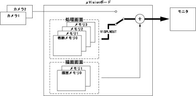

VISPLNOUT
（ステートメント）

格納メモリの画像をモニタに表示します。

VISPLNOUT <格納メモリ番号>［，<テーブル番号>］

<格納メモリ番号>
格納メモリ番号（処理画面番号）を指定します。（0～3）
<テーブル番号>
表示する際のルックアップテーブル番号を指定します。（0～15）省略時は1を指定します。



|
VISPLNOUT 0,1
|
'格納メモリ0番の画像(停止画像)をモニタにテーブ
'ル1番(0～175約70%輝度圧縮)で変換し表示します。
|
|
VISPLNOUT 0
|
'VISPLNOUT 0,1と同じ結果が得られます。
|